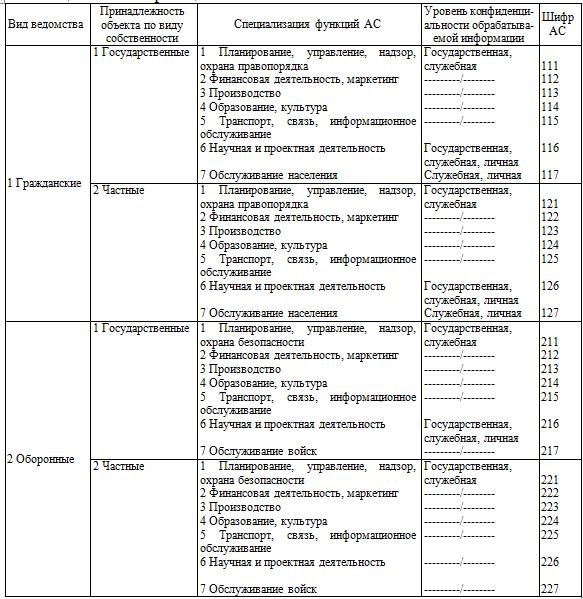

Под автоматизированной системой (АС) понимается человекомашинная система, предназначенная для решения определенного круга прикладных задач. Большое многообразие областей применения АС, различия по количественному и качественному составу пользователей и обслуживающего персонала, содержанию и характеру обрабатываемой информации определяют специфичные особенности каждой АС и требуют их классификации с целью выработки общих принципов и универсальных решений по защите информации в каждом классе АС.
Учитывая, что реализация систем защиты информации является дорогостоящей задачей, при проектировании систем защиты каждой АС необходимо учитывать специфику угроз и их последствий с целью обоснования и минимизации затрат на разработку и эксплуатацию средств защиты [1].
Возможно несколько взаимодополняющих подходов к классификации АС по области использования, характеру обрабатываемой информации, программно-аппаратной структуре. В табл.1 приведена классификация АС в зависимости от области их использования и уровня конфиденциальности обрабатываемой информации.
Принадлежность к определенному ведомству характеризует степень глобального ущерба, который, в принципе, может быть нанесен в результате утечки или искажения информации, причем нарушение защиты информации в АС гражданских ведомств, как правило, ведет к экономическим потерям, в то время как в оборонных ведомствах приводит также к угрозе национальной безопасности государства.
Таблица 1. Классификация АС

Разделение объектов по виду собственности определяет, какие интересы превалируют при защите информации в АС: государственные или частные, а специализация функций АС в значительной степени определяет специфику угроз в конкретной АС.
Уровень конфиденциальности обрабатываемой информации соотносит ущерб с конкретным владельцем информации. Следует иметь в виду, что владелец информации, разрешая доступ к информации другим субъектам, определяет уровень конфиденциальности информации, что существенным образом сказывается на реализации системы разграничения доступа в АС.
В любой АС могут использоваться персональные ЭВМ (ПЭВМ), системы коллективного пользования (СКП) и вычислительные сети.